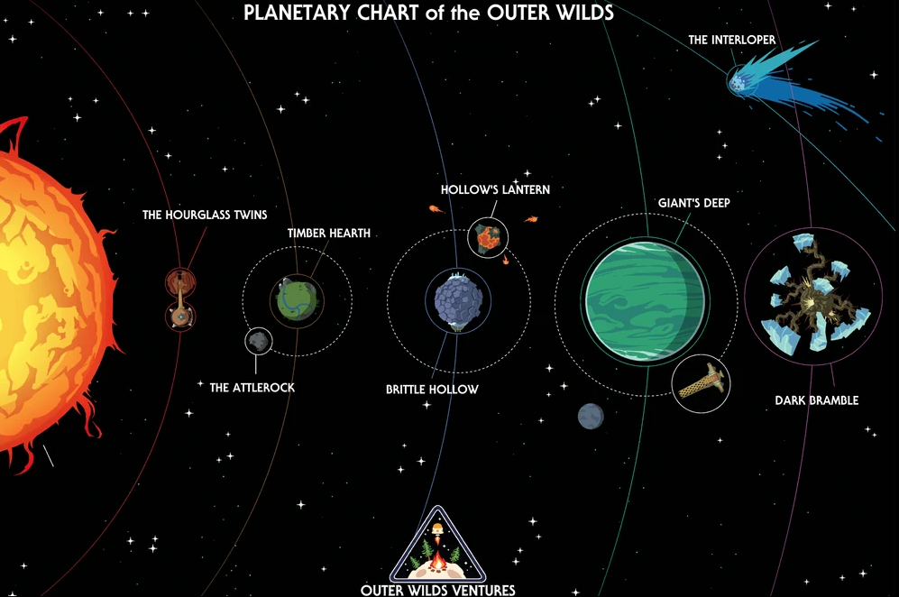

Trailer do jogo
Sobre o jogo e como os spoilers podem afetar a sua experiência:
Outer Wilds é um jogo de exploração espacial mundo aberto onde o jogador é o mais novo astronauta do programa "Outer Wilds Ventures", que investiga as ruínas de uma antiga civilização alienígena que passou no seu sistema muito antes de você sonhar em existir. Nesse jogo, a única coisa que te move é a sua curiosidade. Ao contrário da maioria esmagadora dos jogos, Outer Wilds não te obriga a fazer nada, não fica uma notificação gigante em amarelo radioativo dizendo: VA PARA X E FAÇA Y AGORA!!
Nesse sentido, o universo parece realmente vivo, ele não depende do jogador para funcionar. Assim, claro que o jogador tem um papel no jogo, mas você não é especial, você não tem o sangue especial ou algo assim. A única coisa que te diferencia dos outros personagens é a sua curiosidade, sua vontade de saber mais sobre o sistema solar e o motivo das coisas estarem ||daquele jeito|| e o motivo de ||aquela coisa|| acontecer
E provavelmente você ficou incomodado com essa escrita do texto acima: "aquilo", "aquela coisa" e outros termos genéricos. Realmente, o texto ficou feio sendo escrito assim, mas, é necessário. Como eu disse, o motivo do jogo andar pra frente é você buscar informações mesmo sem que tenha um ícone te dizendo o que fazer.
E é por isso que spoilers são algo tão prejudicial nesse jogo. Se você ja sabe o que vai acontecer não tem pra que explorar, já que durante todo o jogo você não muda, você não fica mais forte ou mais rápido. A ÚNICA diferença entre o você da primeira e da última jogatina é o tanto que você sabe.
E é exatamente por isso que ||os spoilers estão censurados, se você já passou pela parte do jogo que você está vendo, basta clicar para revela-lo. MAS CUIDADO, uma vez que você sabe de algo não tem como "dessaber"|| <-clica aqui
Você está pronto para seguir viagem!
clique em um planeta para viajar para ele
